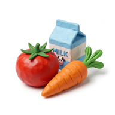

מדריך קצר לכל מה שהאפליקציה יודעת לעשות
רשימת קניות אחת לכל הבית, שמתעדכנת אצל כולם בזמן אמת. מי שיוצא לסופר מודיע בלחיצה, השאר מקבלים התראה ויכולים להוסיף מה שחסר עד הרגע האחרון, ובסוף כולם אומרים תודה 🎉
shoshanim777.github.io/home-app
בתפריט ⋮ של Chrome בוחרים התקנת אפליקציה או הוספה למסך הבית. מעכשיו האפליקציה נפתחת מהאייקון, כמו כל אפליקציה אחרת.
אימייל וסיסמה (לפחות 6 תווים) לבחירתכם. אין צורך לאשר מייל.
בוחרים אני הראשון/ה בבית, נותנים שם לבית ולעצמכם.
בהגדרות מופיע קוד הבית, ויש כפתור שליחת הקוד בוואטסאפ.
מתקינים, יוצרים משתמש, בוחרים קיבלתי קוד הזמנה ומקלידים את הקוד. זהו, אתם על אותה רשימה.
לוחצים הפעלת התראות ומאשרים. אפשר לבדוק בהגדרות ← שליחת התראת בדיקה. בלי התראות לא תדעו כשמישהו יוצא לסופר.
בשורה מה חסר? כותבים ושולחים. האפליקציה מזהה את המחלקה ומוסיפה אייקון לבד.
הכפתור בחירה מרשימה פותח קטלוג לפי מחלקות עם אייקונים. מסמנים כמה מוצרים, קובעים כמות ומוסיפים בבת אחת.
מוצר שאתם קונים הרבה ולא מופיע בקטלוג? שומרים אותו בלשונית המוצרים שלנו, והוא יחכה שם לשניכם.
לחיצה על הכמות (+1) מוסיפה עוד אחד.
לחיצה על שם המוצר: שינוי שם, כמות, הערה (מותג, גודל) ומחיר.
לחיצה על העיגול שליד המוצר. הוא נמחק אחרי 3 שניות, ולחיצה נוספת בזמן הזה מבטלת.
המנורה נדלקת בכתום, וכל השאר מקבלים התראה.
את סדר המחלקות קובעים פעם אחת בהגדרות ← סדר המחלקות.
בפס העליון רואים כמה כבר בעגלה ומה הסכום המשוער.
ליד מוצר שבעגלה אפשר להקליד מחיר. הוא יישמר ויופיע בפעם הבאה.
בתפריט של המוצר: לא היה במלאי (נשאר לפעם הבאה), לקחתי משהו אחר במקום, או לשאול את מי שבבית. מי שבבית מקבל/ת הודעה מיד.
זה הזמן להוסיף מה שנשכח. מוצר שנוסף עכשיו מסומן חדש אצל מי שבסופר, ומגיעה לו/ה התראה.
הסימונים מתעדכנים אצלכם בזמן אמת.
עונים לשאלות ושולחים הודעה קצרה בלחיצה (למשל 👍 קיבלתי) או לב ❤.
אפשר להקליד כמה יצא בקופה (לא חובה). מה שסומן בעגלה יורד מהרשימה, ומה שלא נקנה נשאר לפעם הבאה.
עצרתם בתחנת דלק, במכולת או בפיצוציה בדרך הביתה? בלשונית משפחה לוחצים על המקום, וכל בני הבית מקבלים הודעה ויכולים לבקש משהו בלחיצה. מוצרים מרשימת הסופר שמבקשים ממכם יורדים מהרשימה כשמסמנים קניתי ✓.
בחלון נחתתי… מסמנים בכוכב את המקומות הקבועים, והם מופיעים ככפתורים בלחיצה אחת. בעיפרון ✎ מוסיפים כתובת שתופיע בהודעה.
מזמינים משלוח? פתיחת הזמנה: בוחרים מאיפה (Wolt, תן ביס, משלוחה) ולכמה זמן אפשר להצטרף. כולם מקבלים הודעה ומוסיפים מה הם רוצים. מי שפתח/ה מזמין/ה באפליקציה של המשלוחים ולוחץ/ת סגרתי והזמנתי, וכשהמשלוח מגיע הגיע 🍕 מודיע לכולם.
בתחתית הרשימה: מה נקנה בפעם הקודמת. + לרשימה מחזיר מוצר אחד, ולהעביר הכול מחזיר את כל הקנייה.
אחרי כמה קניות האפליקציה מציעה מוצרים שאתם קונים כמעט תמיד ושעוד לא ברשימה. לחיצה מוסיפה.
כמה הוצאתם החודש, מי קנה, מה קונים הכי הרבה, שינויי מחירים, ופירוט של כל קנייה.
ממשיכים לעבוד כרגיל. השינויים נשמרים ונשלחים כשהקליטה חוזרת.
הרשימות, ההודעות והסכומים גלויים רק לבני הבית שלכם. דותן, שבנה את האפליקציה, מקבל רק הודעה כשבית חדש נפתח או כשמישהו מצטרף, וסיכום שבועי של מספר הבתים והקניות. הוא לא רואה מה כתוב אצלכם.